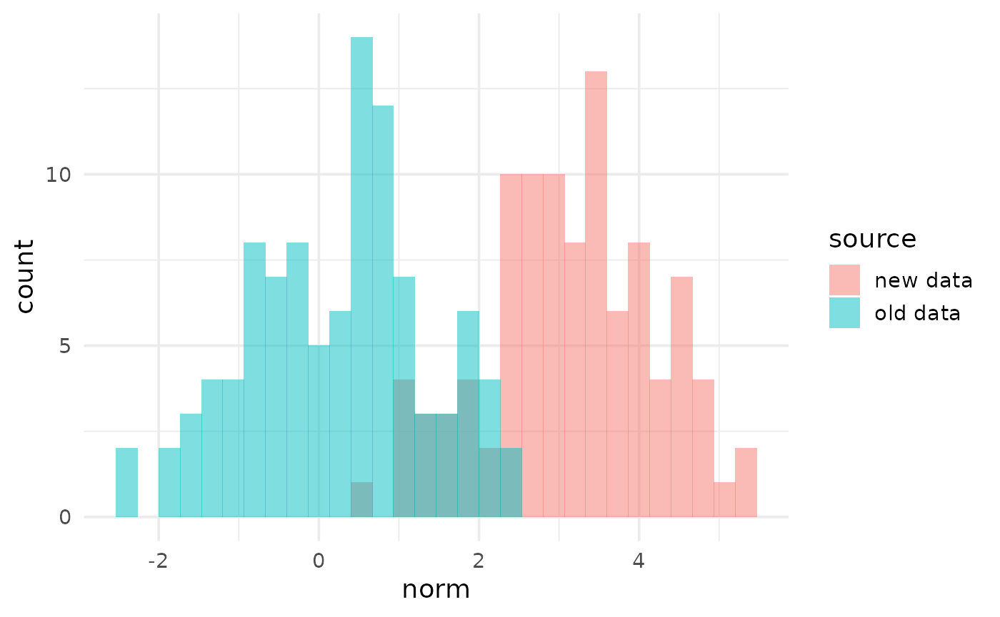
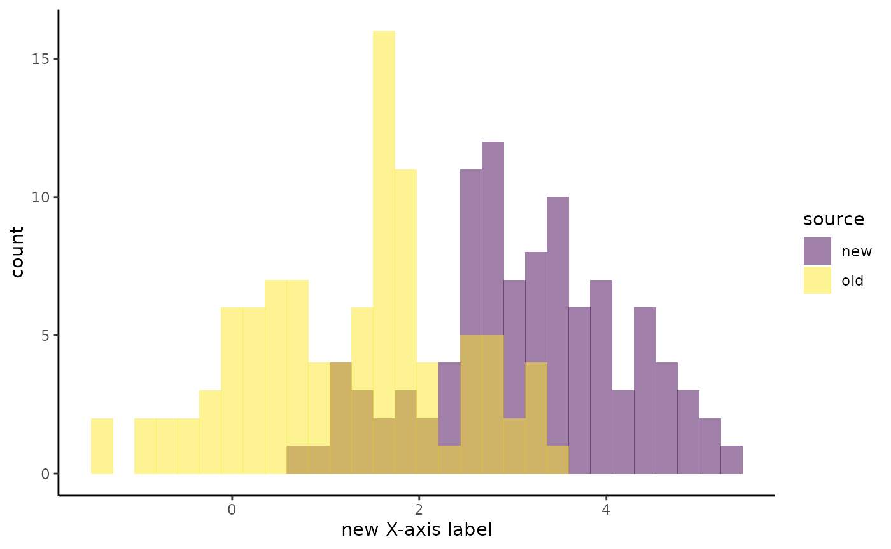
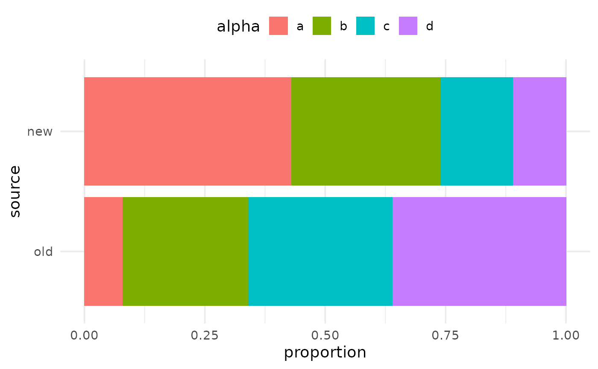

A typical flyover workflow has the following steps:
This vignette will introduce step 2: how flyover’s plotting functions work and how to easily build comparison plots for different types of data.
This vignette assumes you have a single data set composed of data from different groups for comparison. We will show how to use that data to build a collection of plots for comparing distributions between groups.
We simulate a data set with numeric and categorical variables from two different sources (called “old” and “new”). Each source has a slightly different data-generating process. Note the source column where these values are stored. We wish to understand the distributional differences of the other variables between these sources.
str(my_data)
## tibble [200 × 10] (S3: tbl_df/tbl/data.frame)
## $ source: chr [1:200] "old" "old" "old" "old" ...
## $ norm : num [1:200] 1.586 1.709 0.891 0.547 1.606 ...
## $ exp : num [1:200] 0.1772 0.0858 0.3273 0.5311 2.5615 ...
## $ chisq : num [1:200] 4.53 6.54 4.92 3.55 2.71 ...
## $ lnorm : num [1:200] 1.024 0.619 1.016 4.919 1.054 ...
## $ gamma : num [1:200] 0.866 0.89 0.549 1.02 0.948 ...
## $ alpha : chr [1:200] "c" "b" "a" "d" ...
## $ hilo : chr [1:200] "high" "low" "low" "low" ...
## $ tf : logi [1:200] TRUE FALSE TRUE TRUE FALSE TRUE ...
## $ fruit : chr [1:200] "pear" "pear" "apple" "pear" ...Plotting in flyover comes in two flavors, numeric and categorical. The package comes with basic built-in plotting functions that operate on columns of one of these types, and ignores columns of the other type. This means you don’t have to pre-filter a data frame by the type of data that the plots will use.
Numeric plotting functions will keep integer and float type variables and ignore everything else.
Categorical plotting functions will keep character, factor, and logical type variables and will ignore everything else.
Currently, flyover’s built-in functions and the data types on which they act are:
| function_name | data_type |
|---|---|
| flyover_histogram | numeric |
| flyover_density | numeric |
| flyover_binline_ridges | numeric |
| flyover_density_ridges | numeric |
| flyover_bar_dodge | categorical |
| flyover_bar_fill | categorical |
| flyover_na_percent | both |
| flyover_na_count | both |
Plotting functions ending with _ridges are derived from the package ggridges (documentation). These are well suited to comparing numeric distributions through time, e.g. for examining data drift across data pulls occurring on regular intervals.
The functions titled flyover_na_* are for general data quality monitoring and can operate on columns of both numeric and categorical types. These are also best suited for monitoring data through time.
See examples of monitoring data drift in this article.
To build plots, you must specify at least three things:
tibble or data.table)flyover plotting function you wish to useflyover_id_ which is the default output of stack_data).For each variable of the type associated with your chosen plotting function, flyover will generate a plot. However, these plots are not printed yet; they are merely stored in a tibble until they are used to build displays.
As an example, suppose we wish to compare the numeric variables in our example data across the values of the group variable source. We are interested in histograms. Then we would build the plots in the following manner:
my_histograms <- build_plots(my_data, flyover_histogram, group_var = "source") my_histograms
## # A tibble: 5 x 3
## variable plot cogs
## <chr> <named list> <named list>
## 1 norm <gg> <tibble [1 × 5]>
## 2 exp <gg> <tibble [1 × 5]>
## 3 chisq <gg> <tibble [1 × 5]>
## 4 lnorm <gg> <tibble [1 × 5]>
## 5 gamma <gg> <tibble [1 × 5]>Notice that the output is a tibble having column plot which contains one plot for each numeric variable in the data. (See below for a discussion on the cogs columns.) The function does not print the plots directly at this stage. However, the individual plots can still be accessed:
my_histograms$plot[[1]]

You are not limited to the default appearance of the built-in plotting functions. You can modify these plots by passing additional ggplot2 elements as a list:
my_histograms_mod <- build_plots(my_data, flyover_histogram, group_var = "source", plot_mods = list(xlab("new X-axis label"), theme_classic(), scale_fill_viridis_d())) my_histograms_mod$plot[[1]]

In a similar way, we can compare distributions of categorical variables across groups by examining their proportions using bar plots.
my_bars <- build_plots(my_data, flyover_bar_fill, group_var = "source") my_bars
## # A tibble: 4 x 3
## variable plot cogs
## <chr> <named list> <named list>
## 1 alpha <gg> <tibble [1 × 3]>
## 2 hilo <gg> <tibble [1 × 3]>
## 3 tf <gg> <tibble [1 × 3]>
## 4 fruit <gg> <tibble [1 × 3]>As before, you can view individual plots by calling them from this tibble.
my_bars$plot[[1]]

The tibble returned by build_plots contains a column called cogs which is short for “cognostics”. You can read more about cognostics in the trelliscopejs documentation. In short, they are pieces of metadata that are associated with each plot in order to sort and filter plots. They are stored as tibbles, and for numeric plots they look like this:
str(my_histograms$cogs[[1]])
## tibble [1 × 5] (S3: tbl_df/tbl/data.frame)
## $ pct_change_mean : num 152
## $ pct_change_median : num 111
## $ pct_change_max : num 53.9
## $ pct_change_min : num 147
## $ pct_change_n_missing: num 0These are summaries of features of the data used to generate the first plot. They represent the largest differences (in percentage terms) between any groups for that variable.
For categorical plots, the cognostics look like this:
str(my_bars$cogs[[1]])
## tibble [1 × 3] (S3: tbl_df/tbl/data.frame)
## $ pct_change_n_missing : num 0
## $ pct_change_pct_missing: num 0
## $ n_levels : int 4The next article will clarify how cognostics are used in trelliscope displays.
If you have an unruly number of variables to plot, you can save time by creating them in parallel. On unix-like machines, you can supply an integer to the ncores argument to render plots across multiple cores. This uses the parallel package that ships with R, which means that unfortunately this feature is not supported on Windows (unless you are using Windows Subsystem for Linux).
For an introduction to parallel computing, see this chapter in Roger Peng’s book.
my_histograms <- build_plots(my_data, flyover_histogram, group_var = "source", ncores = 4)